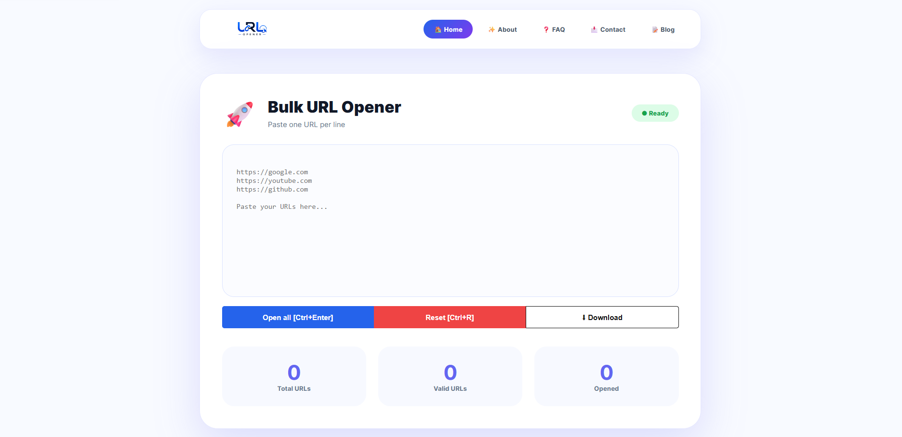
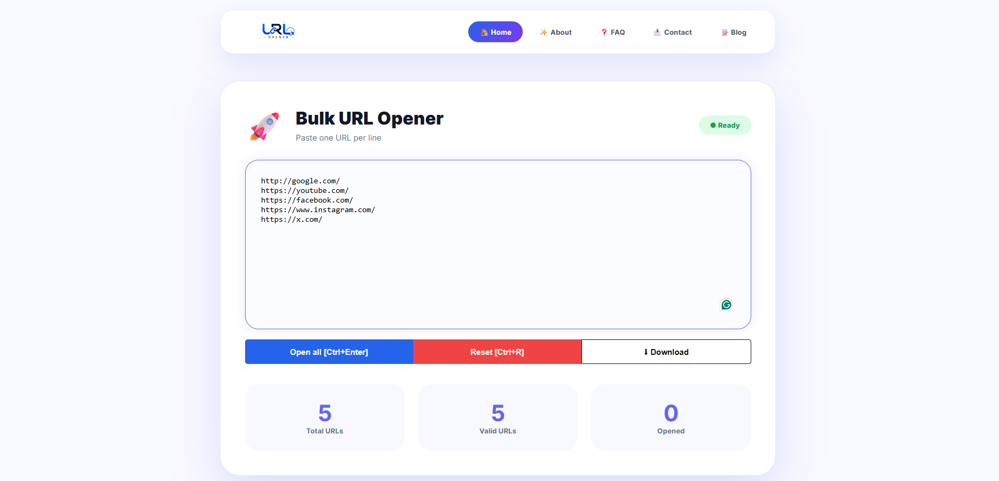
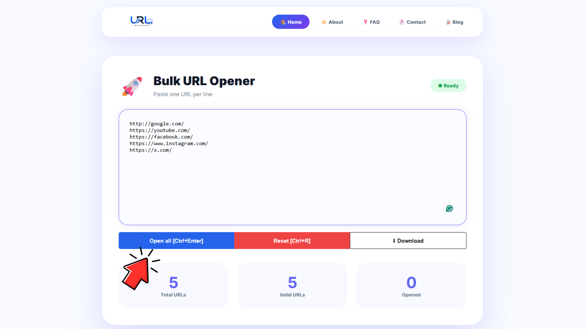

Paste one URL per line
Save time by opening multiple website links together. Paste your URLs and launch them instantly from your browser.
Bulk URL Opener is a free online tool that helps users open multiple URLs at the same time.
Whether you need to check multiple websites, manage research links, test webpages or save time while working with many URLs, Bulk URL Opener provides a simple browser-based solution without requiring any software installation.
Using Bulk URL Opener is simple. Add your website links into the input box, place each URL on a separate line and click the Open All button. The tool automatically processes your links and opens them in separate browser tabs, helping you complete repetitive tasks quickly.
A simple browser-based tool designed to open multiple links quickly.
Open multiple URLs instantly with one click.
Your URLs remain inside your browser.
No signup and no installation required.
Open multiple URLs in just three simple steps.

Open Bulk URL Opener and access the URL input box.

Paste multiple website links one URL per line.

Click the Open All button and launch your URLs instantly.